Visualization of the change in abortion data after the Dobbs decision, which gave power of legislation over abortion to the different states of the U.S.
The right to have an abortion was protected in the U.S. after the Roe v. Wade(1973) decision, taken by the U.S. Supreme Court. This decision ruled that the Constitution protected the right to have an abortion. In 2022, the Supreme Court took another decision (Dobbs v. Jackson Women’s Health Organization, popularly known as Dobbs), which overruled Roe v. Wade.
This decision gave the power to the states to decide individually about the regulation of the right to have an abortion. This caused a drop in abortion in Republican states in which abortion became fully, or almost fully illegal.
This project replicates a graph from FiveThirtyEight which shows the changes in abortion data after Dobbs:
After this replication, we try to add information about the public opinion on Roe v. Wade for the different states. This way we can see if the decisions of the different governments pair with the opinion of the population.
First, we prepare a data frame in which we mark the position of each state, the name abreviation and the corresponding value of change in abortions.
df <- data.frame(
x = c(1, 8, 6, 3, 2, 4, 11, 11, 11, 10, 9, 1, 6, 3, 6, 7, 5, 7, 5, 11, 10,
12, 8, 6, 6, 7, 4, 10, 5, 5, 12, 10, 4, 3, 10, 8, 4, 2, 9, 12, 9,
5, 8, 5, 3, 9, 11, 2, 7, 8, 4),
y = c(8, 2, 2, 3, 4, 4, 5, 3, 4, 1, 2, 2, 5, 6, 4, 4, 3, 3, 2, 6, 4, 8,
6, 6, 3, 2, 6, 3, 6, 4, 7, 5, 3, 4, 6, 5, 2, 5, 5, 6, 3, 5, 3, 1, 5,
4, 7, 6, 5, 4, 5),
state = c("AK", "AL", "AR", "AZ", "CA", "CO", "CT", "DC", "DE", "FL", "GA",
"HI", "IA", "ID", "IL", "IN", "KS", "KY", "LA", "MA", "MD", "ME",
"MI", "MN", "MO", "MS", "MT", "NC", "ND", "NE", "NH", "NJ", "NM",
"NV", "NY", "OH", "OK", "OR", "PA", "RI", "SC", "SD", "TN", "TX",
"UT", "VA", "VT", "WA", "WI", "WV", "WY"),
state.color = c("black", "#BE8DB7", "#BE8DB7", "black", "black",
"black", "black", "black", "black", "black",
"black", "black", "black", "black", "black",
"black", "black", "#BE8DB7", "#BE8DB7", "black",
"black", "black", "black", "black", "white",
"#BE8DB7", "black", "black", "#BE8DB7", "black",
"black", "black", "black", "black", "black",
"white", "#BE8DB7", "black", "black", "black",
"black", "#BE8DB7", "white", "#BE8DB7", "black",
"black", "black", "black","#BE8DB7", "black", "black"),
value = c(2, -100, -100, -53, 1, 33, -1, 0, 24, 10, -57, 4, -27, -48, 28,
15, 36, -100, -100, -3, 1, 18, 8, 14, -83, -100, 30, 37, -100, 30,
-6, 7, 12, 21, 12, -65, -100, 18, 6, -7, -56, -100, -78, -100, -3,
-4, 16, 5, -100, -8, -5))First, we create a base for the graph, using geom_tile to draw the states. We also try the PRGn palette, since it looked similar to the color palette used by FiveThirtyEight.
library(ggplot2)
ggplot(df) +
aes(x, y, fill=value) +
geom_tile(color="white", linewidth=2) +
geom_text(aes(label=state, color=state.color), size=6) +
coord_fixed() +
scale_fill_distiller(type="div", palette="PRGn") +
scale_color_identity() +
theme_void()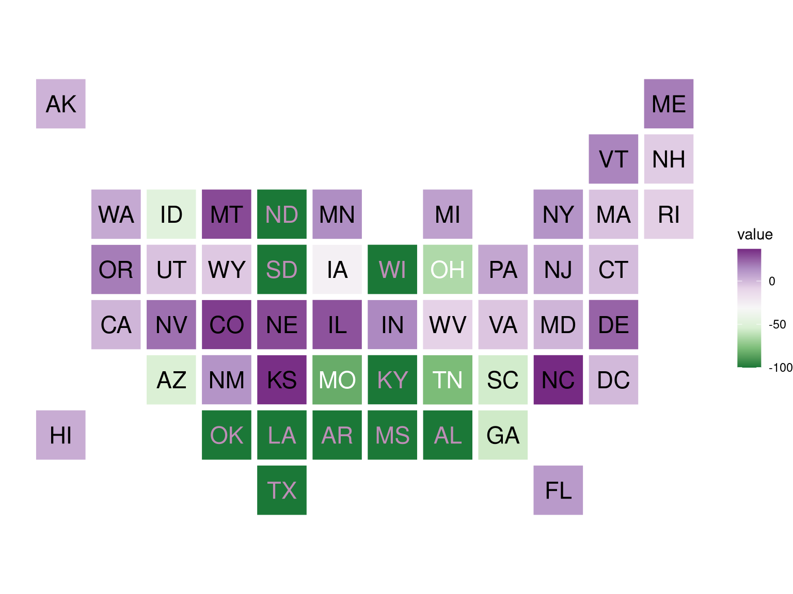
We realised that the color pallete didn’t followed a normal “distributionâ€. In order to perfectly match the colors, we took certain values, and assign them to the colors showed in the original graph for those states.
q <- ggplot(df) +
aes(x, y, fill=value) +
geom_tile(color="white", linewidth=2) +
geom_text(aes(label=state, color=state.color), size=5) +
coord_fixed() +
scale_fill_gradientn(colors = c("#4A0B35","#7D3F62", "#92597A",
"#AB7D99", "#CBA8C2", "#E8D0E9",
"#F0F0F0", "#DBF2D5", "#C1DCB8",
"#B4D2AB", "#A9C89E", "#9CBD8F",
"#7EA370", "#2B5F1D"),
breaks = c(-100, -78, -65, -48, -27, -8, 0, 5, 18,
24, 30, 37, 50, 100),
limits = c(-100, 100)) +
scale_color_identity() +
theme_void()
q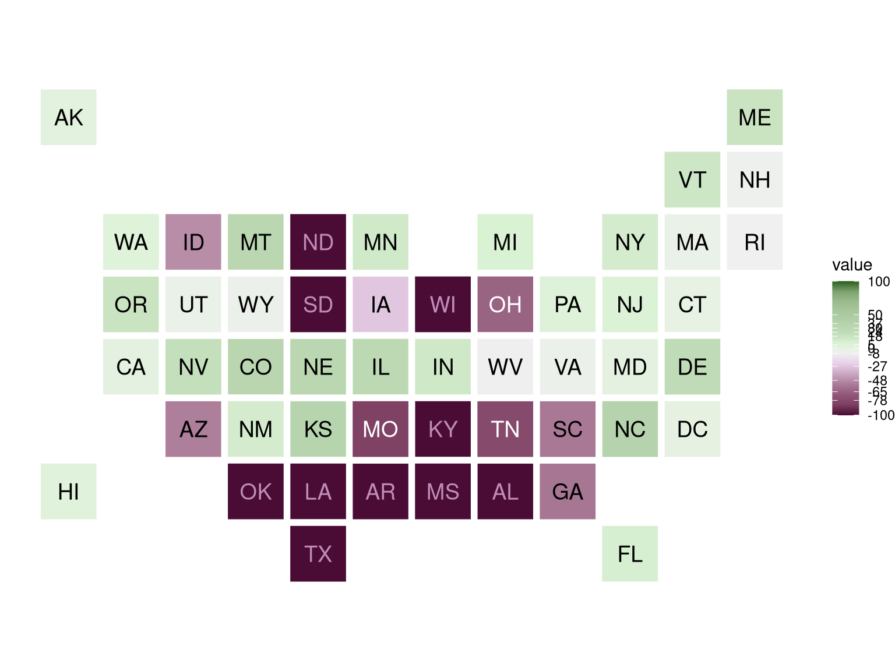
We change the position and direction of the legend, which consits on a color bar.
q <- q + guides(fill = guide_colorbar(title = "PERCENT CHANGE",
title.position = "top",
title.theme = element_text(size = 10,
family = "Helvetica"),
#title.hjust = 0.5,
#title.vjust = 0.5,
label = FALSE,
barheight = 0.7,
barwidth = 9,
#nbin = 100,
ticks = FALSE,
direction = "horizontal")) +
theme(legend.position = c(0.13, 1))
q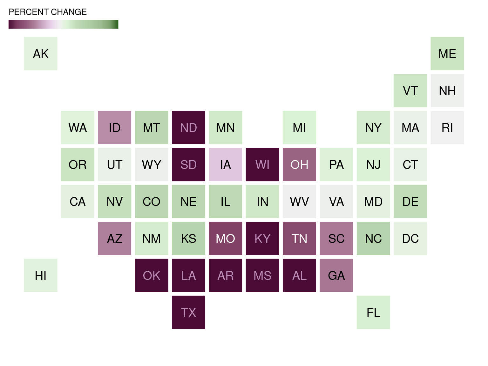
We add the title, subtitle and caption of the graph.
q <- q + labs(
title = "Several states saw a complete drop in abortions after Dobbs",
subtitle = "Percentage change in number of abortions from April to August 2022, by state",
caption = paste0("Percent change in abortions is calculated from #WeCount's unrounded data.",
"\nLess-populated states might see larger",
"percentage shifts because the raw number of abortions in",
"those states tend to be smaller.")
) +
theme(plot.title = element_text(size = 18, color = "#222222", face = "bold",
family = "Helvetica", hjust = 0.1, vjust = 3)) +
theme(plot.subtitle = element_text(size = 14, color = "#222222", face = NULL,
family = "Helvetica", hjust = 0.1, vjust = 3)) +
theme(plot.caption = element_text(size = 10, color = "#999999", face = NULL,
family = "Helvetica", hjust = 0, vjust = 0.1)) +
ylim(0, 9) +
theme(legend.position = c(0.13, 0.97))
q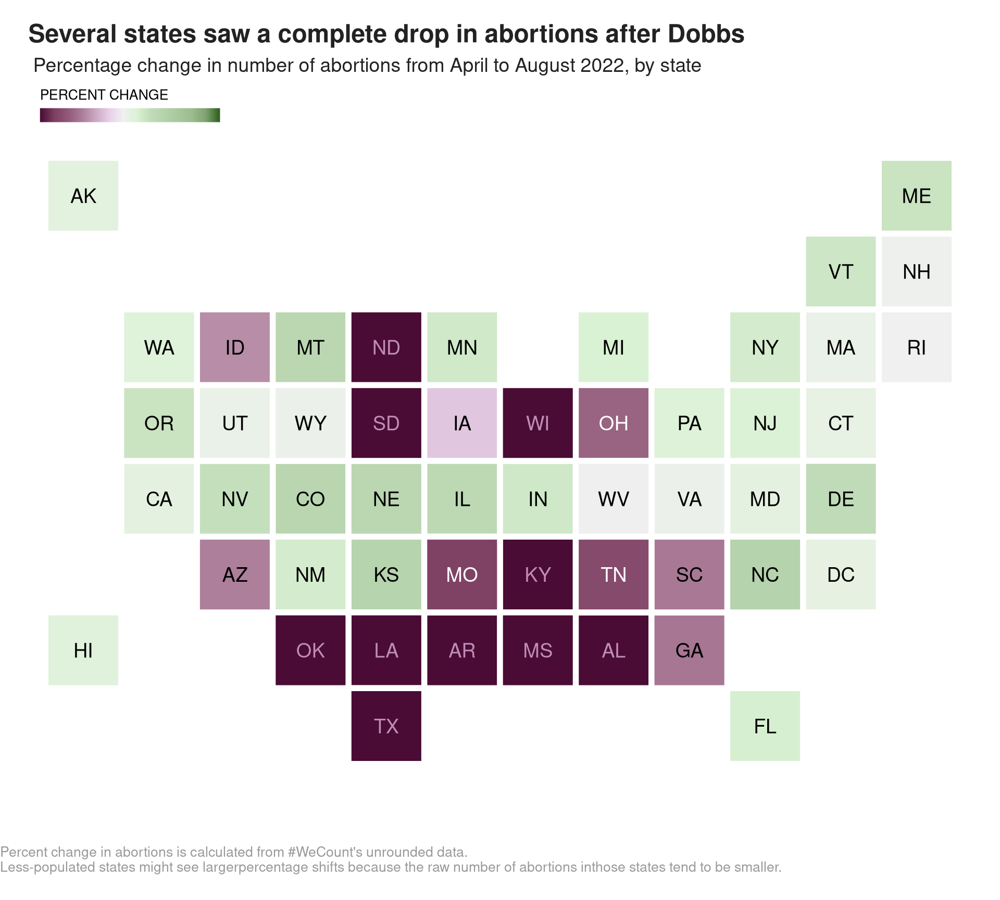
We begin with the square annotations, which surround some states.
# Base
q <- q + annotate("rect", xmin = 6.5, xmax = 7.5, ymin = 8.65, ymax = 9.65,
alpha = 0, color = "#D8726F") + ylim(0, 10)
# SD
q <- q + annotate("rect", xmin = 4.5, xmax = 5.5, ymin = 4.5, ymax = 5.5,
alpha = 0, color = "#D8726F")
# WI
q <- q + annotate("rect", xmin = 6.5, xmax = 7.5, ymin = 4.5, ymax = 5.5,
alpha = 0, color = "#D8726F")
# OH
q <- q + annotate("rect", xmin = 7.5, xmax = 8.5, ymin = 4.5, ymax = 5.5,
alpha = 0, color = "#D8726F")
# KY
q <- q + annotate("rect", xmin = 6.5, xmax = 7.5, ymin = 2.5, ymax = 3.5,
alpha = 0, color = "#D8726F")
# MO
q <- q + annotate("rect", xmin = 5.5, xmax = 6.5, ymin = 2.5, ymax = 3.5,
alpha = 0, color = "#D8726F")
# TN
q <- q + annotate("rect", xmin = 7.5, xmax = 8.5, ymin = 2.5, ymax = 3.5,
alpha = 0, color = "#D8726F")
# SC
q <- q + annotate("rect", xmin = 8.5, xmax = 9.5, ymin = 2.5, ymax = 3.5,
alpha = 0, color = "#D8726F")
# AZ
q <- q + annotate("rect", xmin = 2.5, xmax = 3.5, ymin = 2.5, ymax = 3.5,
alpha = 0, color = "#D8726F")
# OK
q <- q + annotate("rect", xmin = 3.5, xmax = 4.5, ymin = 1.5, ymax = 2.5,
alpha = 0, color = "#D8726F")
# LA
q <- q + annotate("rect", xmin = 4.5, xmax = 5.5, ymin = 1.5, ymax = 2.5,
alpha = 0, color = "#D8726F")
# AR
q <- q + annotate("rect", xmin = 5.5, xmax = 6.5, ymin = 1.5, ymax = 2.5,
alpha = 0, color = "#D8726F")
# MS
q <- q + annotate("rect", xmin = 6.5, xmax = 7.5, ymin = 1.5, ymax = 2.5,
alpha = 0, color = "#D8726F")
# AL
q <- q + annotate("rect", xmin = 7.5, xmax = 8.5, ymin = 1.5, ymax = 2.5,
alpha = 0, color = "#D8726F")
# GA
q <- q + annotate("rect", xmin = 8.5, xmax = 9.5, ymin = 1.5, ymax = 2.5,
alpha = 0, color = "#D8726F")
# TX
q <- q + annotate("rect", xmin = 4.5, xmax = 5.5, ymin = 0.5, ymax = 1.5,
alpha = 0, color = "#D8726F")
q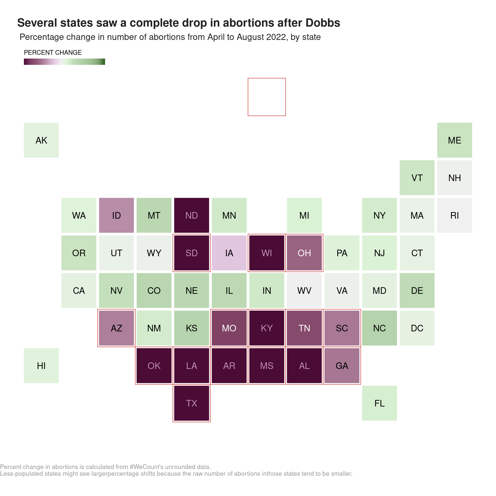
Next, line annotations which point out information about some states.
## Lines ##
# CA
q <- q + annotate("segment", x = 2, xend = 2, y = 3.5, yend = 1, color = "black")
# AZ
q <- q + annotate("segment", x = 3, xend = 3, y = 2.5, yend = 2, color = "black")
# CA&AZ
q <- q + annotate("segment", x = 2, xend = 3, y = 2, yend = 2, color = "black")
# ND
q <- q + annotate("segment", x = 5.3, xend = 5.3, y = 6.5, yend = 7.1, color = "black")
# AR
# AR1
q <- q + annotate("segment", x = 6, xend = 6, y = 1.5, yend = -0.2, color = "black") + ylim(-0.5, 10)
# AR2
q <- q + annotate("segment", x = 6, xend = 6.3, y = -0.2, yend = -0.2, color = "black")
q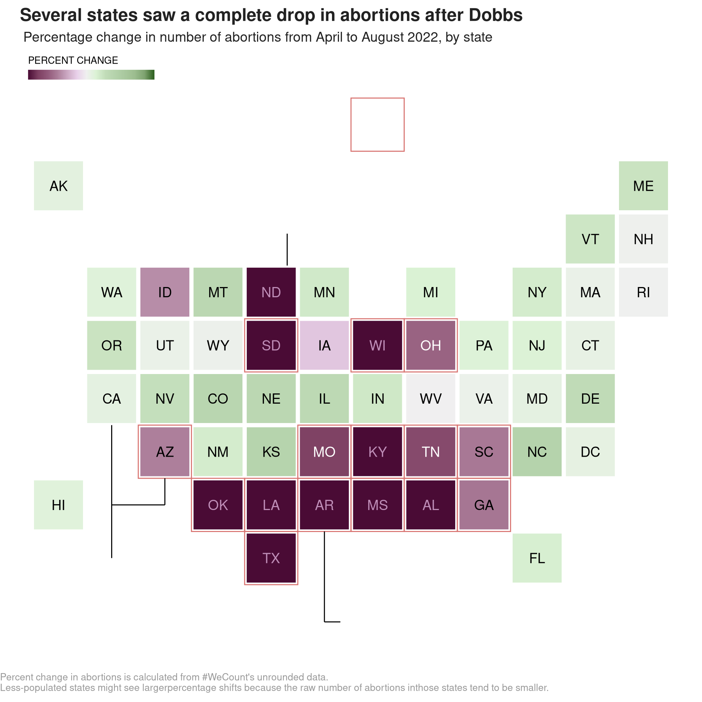
Lastly, we will do text annotations, which are “on the other side†of the line annotations. We also add the values for the legend.
# Base square
library(ggtext)
q <- q + annotate(geom = "richtext", x = 7.5, y = 9.15,
label = "Outlines indicate that abortion was **fully**
<br>**illegal** or **illegal after about six weeks** for
<br>at least half of the two months after Dobbs",
size = 5, fill = NA, label.color = NA, hjust = 0, color = "#555555",
family = "Helvetica")
# ND
q <- q + annotate(geom = "richtext", x = 2.6, y = 7.7,
label = "The only abortion clinic in
<span style = 'color:#480A34'>**North Dakota**</span>
<br> moved to <span style = 'color:#567F4D'>**Minnesota**</span>,
where the number<br>of abortions rose by
<span style = 'color:#567F4D'>**14%**",
size = 5, fill = NA, label.color = NA, hjust = 0, color = "#555555",
family = "Helvetica")
# CA & AZ
q <- q + annotate(geom = "richtext", x = 0.5, y = 0.25,
label = "Abortions in <span style = 'color:#567F4D'>**California**</span>
<br>rose by only <span style = 'color:#567F4D'>**1%**</span>, although
<br>they declined by <span style = 'color:#99607E'>**53%**</span> in
<br>neighboring <span style = 'color:#99607E'>**Arizona**",
size = 5, fill = NA, label.color = NA, hjust = 0, color = "#555555",
family = "Helvetica")
# AR
q <- q + annotate(geom = "richtext", x = 6.4, y = -0.4,
label = "Many Southern states saw a<
br><span style = 'color:#480A34'>**100% decline**</span> in the number
<br>of abortions as a result of<br>post-Dobbs legislation",
size = 5, fill = NA, label.color = NA, hjust = 0, color = "#555555",
family = "Helvetica") +
xlim(-0.5, 13.5) + ylim(-0.7, 9.7)
# Legend
q <- q + annotate(geom = "richtext", x = -0.25, y = 9.6,
label = "-100%",
size = 3, fill = NA, label.color = NA, hjust = 0)
q <- q + annotate(geom = "richtext", x = 0.35, y = 9.6,
label = "No change",
size = 3, fill = NA, label.color = NA, hjust = 0)
q <- q + annotate(geom = "richtext", x = 1.3, y = 9.6,
label = "+100%",
size = 3, fill = NA, label.color = NA, hjust = 0)
q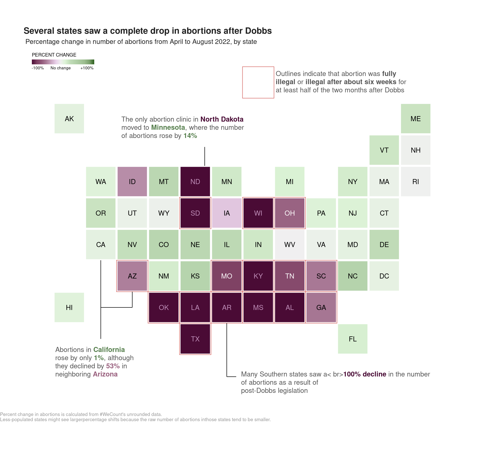
We create a new dataframe, which contains new positions for the states. We do this to separate them, so they don’t share the lines outside the states. This way we will be able to add the information.
df <- data.frame(
x = c(1, 10.1, 7.5, 3.6, 2.3, 4.9, 14, 14, 14, 12.7, 11.4,
1, 7.5, 3.6, 7.5, 8.8, 6.2, 8.8, 6.2, 14, 12.7, 15.3,
10.1, 7.5, 7.5, 8.8, 4.9, 12.7, 6.2, 6.2, 15.3, 12.7, 4.9,
3.6, 12.7, 10.1, 4.9, 2.3, 11.4, 15.3, 11.4, 6.2, 10.1, 6.2,
3.6, 11.4, 14, 2.3, 8.8, 10.1, 4.9),
y = c(10.1, 2.3, 2.3, 3.6, 4.9, 4.9, 6.2, 3.6, 4.9, 1, 2.3,
2.3, 6.2, 7.5, 4.9, 4.9, 3.6, 3.6, 2.3, 7.5, 4.9, 10.1,
7.5, 7.5, 3.6, 2.3, 7.5, 3.6, 7.5, 4.9, 8.8, 6.2, 3.6,
4.9, 7.5, 6.2, 2.3, 6.2, 6.2, 7.5, 3.6, 6.2, 3.6, 1,
6.2, 4.9, 8.8, 7.5, 6.2, 4.9, 6.2),
state = c("AK", "AL", "AR", "AZ", "CA", "CO", "CT", "DC", "DE", "FL", "GA",
"HI", "IA", "ID", "IL", "IN", "KS", "KY", "LA", "MA", "MD", "ME",
"MI", "MN", "MO", "MS", "MT", "NC", "ND", "NE", "NH", "NJ", "NM",
"NV", "NY", "OH", "OK", "OR", "PA", "RI", "SC", "SD", "TN", "TX",
"UT", "VA", "VT", "WA", "WI", "WV", "WY"),
state.color = c("black", "white", "white", "black", "black",
"black", "black", "black", "black", "black",
"black", "black", "black", "black", "black",
"black", "black", "white", "white", "black",
"black", "black", "black", "black", "white",
"white", "black", "black", "white", "black",
"black", "black", "black", "black", "black",
"white", "white", "black", "black", "black",
"black", "white", "white", "white", "black",
"black", "black", "black","white", "black", "black"),
value = c(2, -100, -100, -53, 1, 33, -1, 0, 24, 10, -57, 4, -27, -48, 28,
15, 36, -100, -100, -3, 1, 18, 8, 14, -83, -100, 30, 37, -100, 30,
-6, 7, 12, 21, 12, -65, -100, 18, 6, -7, -56, -100, -78, -100, -3,
-4, 16, 5, -100, -8, -5))We create a new base, with a black background. We do this because if we do an “honest†color gradient, a lot of the states will be close to white. We also add a new color pallete.
library(ggdark)
q <- ggplot(df) +
aes(x, y, fill=value) +
geom_tile(color="black", linewidth=6) +
geom_text(aes(label=state, color=state.color), size=6) +
coord_fixed() +
scale_fill_gradientn(colors = c("#9b2226","#F0F0F0", "#3a5a40"),
breaks = c(-100, 0, 100),
limits = c(-100, 100)) +
scale_color_identity() +
theme_void() +
dark_theme_minimal() +
theme(axis.text = element_blank(),
axis.ticks = element_blank(),
axis.title = element_blank(),
panel.background = element_blank(),
panel.grid = element_blank())
q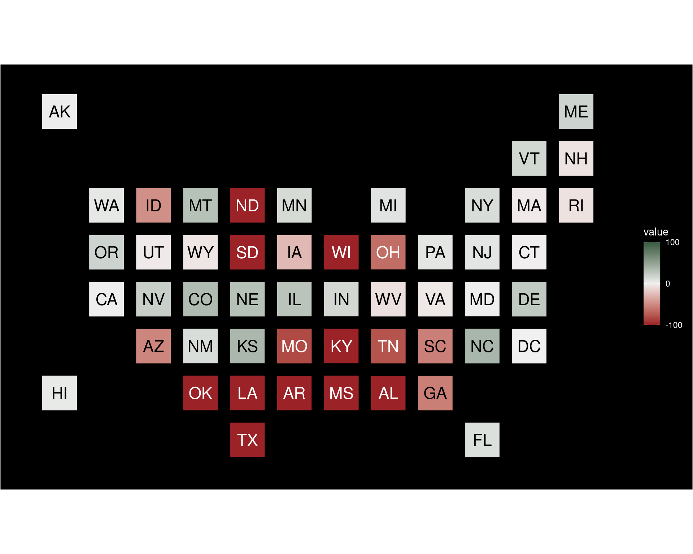
We begin with the squares that will sorround each state. This way, we can give to each of them an alpha value which represent the support of the population to overturning Roe v. Wade.
# AK
q <- q +
annotate("segment", x = 0.43, xend = 0.43, y = 9.53, yend = 10.67,
color = "#7DB4DE", size = 1, alpha = 0.739) +
annotate("segment", x = 0.43, xend = 1.57, y = 9.53, yend = 9.53,
color = "#7DB4DE", size = 1, alpha = 0.739) +
annotate("segment", x = 1.57, xend = 1.57, y = 9.53, yend = 10.67,
color = "#7DB4DE", size = 1, alpha = 0.739) +
annotate("segment", x = 0.43, xend = 1.57, y = 10.67, yend = 10.67,
color = "#7DB4DE", size = 1, alpha = 0.739)
# HI
q <- q +
annotate("segment", x = 0.43, xend = 0.43, y = 1.73, yend = 2.87,
color = "#7DB4DE", size = 1, alpha = 0.435) +
annotate("segment", x = 0.43, xend = 1.57, y = 1.73, yend = 1.73,
color = "#7DB4DE", size = 1, alpha = 0.435) +
annotate("segment", x = 1.57, xend = 1.57, y = 1.73, yend = 2.87,
color = "#7DB4DE", size = 1, alpha = 0.435) +
annotate("segment", x = 0.43, xend = 1.57, y = 2.87, yend = 2.87,
color = "#7DB4DE", size = 1, alpha = 0.435)
# WA
q <- q +
annotate("segment", x = 1.73, xend = 1.73, y = 6.93, yend = 8.07,
color = "#7DB4DE", size = 1, alpha = 0) +
annotate("segment", x = 1.73, xend = 2.87, y = 6.93, yend = 6.93,
color = "#7DB4DE", size = 1, alpha = 0) +
annotate("segment", x = 2.87, xend = 2.87, y = 6.93, yend = 8.07,
color = "#7DB4DE", size = 1, alpha = 0) +
annotate("segment", x = 1.73, xend = 2.87, y = 8.07, yend = 8.07,
color = "#7DB4DE", size = 1, alpha = 0)
# OR
q <- q +
annotate("segment", x = 1.73, xend = 1.73, y = 5.63, yend = 6.77,
color = "#7DB4DE", size = 1, alpha = 0.304) +
annotate("segment", x = 1.73, xend = 2.87, y = 5.63, yend = 5.63,
color = "#7DB4DE", size = 1, alpha = 0.304) +
annotate("segment", x = 2.87, xend = 2.87, y = 5.63, yend = 6.77,
color = "#7DB4DE", size = 1, alpha = 0.304) +
annotate("segment", x = 1.73, xend = 2.87, y = 6.77, yend = 6.77,
color = "#7DB4DE", size = 1, alpha = 0.304)
# CA
q <- q +
annotate("segment", x = 1.73, xend = 1.73, y = 4.33, yend = 5.47,
color = "#7DB4DE", size = 1, alpha = 0.261) +
annotate("segment", x = 1.73, xend = 2.87, y = 4.33, yend = 4.33,
color = "#7DB4DE", size = 1, alpha = 0.261) +
annotate("segment", x = 2.87, xend = 2.87, y = 4.33, yend = 5.47,
color = "#7DB4DE", size = 1, alpha = 0.261) +
annotate("segment", x = 1.73, xend = 2.87, y = 5.47, yend = 5.47,
color = "#7DB4DE", size = 1, alpha = 0.261)
# ID
q <- q +
annotate("segment", x = 3.03, xend = 3.03, y = 6.93, yend = 8.07,
color = "#7DB4DE", size = 1, alpha = 0.565) +
annotate("segment", x = 3.03, xend = 4.17, y = 6.93, yend = 6.93,
color = "#7DB4DE", size = 1, alpha = 0.565) +
annotate("segment", x = 4.17, xend = 4.17, y = 6.93, yend = 8.07,
color = "#7DB4DE", size = 1, alpha = 0.565) +
annotate("segment", x = 3.03, xend = 4.17, y = 8.07, yend = 8.07,
color = "#7DB4DE", size = 1, alpha = 0.565)
# UT
q <- q +
annotate("segment", x = 3.03, xend = 3.03, y = 5.63, yend = 6.77,
color = "#7DB4DE", size = 1, alpha = 0.739) +
annotate("segment", x = 3.03, xend = 4.17, y = 5.63, yend = 5.63,
color = "#7DB4DE", size = 1, alpha = 0.739) +
annotate("segment", x = 4.17, xend = 4.17, y = 5.63, yend = 6.77,
color = "#7DB4DE", size = 1, alpha = 0.739) +
annotate("segment", x = 3.03, xend = 4.17, y = 6.77, yend = 6.77,
color = "#7DB4DE", size = 1, alpha = 0.739)
# NV
q <- q +
annotate("segment", x = 3.03, xend = 3.03, y = 4.33, yend = 5.47,
color = "#7DB4DE", size = 1, alpha = 0.304) +
annotate("segment", x = 3.03, xend = 4.17, y = 4.33, yend = 4.33,
color = "#7DB4DE", size = 1, alpha = 0.304) +
annotate("segment", x = 4.17, xend = 4.17, y = 4.33, yend = 5.47,
color = "#7DB4DE", size = 1, alpha = 0.304) +
annotate("segment", x = 3.03, xend = 4.17, y = 5.47, yend = 5.47,
color = "#7DB4DE", size = 1, alpha = 0.304)
# AZ
q <- q +
annotate("segment", x = 3.03, xend = 3.03, y = 3.03, yend = 4.17,
color = "#7DB4DE", size = 1, alpha = 0.522) +
annotate("segment", x = 3.03, xend = 4.17, y = 3.03, yend = 3.03,
color = "#7DB4DE", size = 1, alpha = 0.522) +
annotate("segment", x = 4.17, xend = 4.17, y = 3.03, yend = 4.17,
color = "#7DB4DE", size = 1, alpha = 0.522) +
annotate("segment", x = 3.03, xend = 4.17, y = 4.17, yend = 4.17,
color = "#7DB4DE", size = 1, alpha = 0.522)
# MT
q <- q +
annotate("segment", x = 4.33, xend = 4.33, y = 6.93, yend = 8.07,
color = "#7DB4DE", size = 1, alpha = 0.565) +
annotate("segment", x = 4.33, xend = 5.46, y = 6.93, yend = 6.93,
color = "#7DB4DE", size = 1, alpha = 0.565) +
annotate("segment", x = 5.46, xend = 5.46, y = 6.93, yend = 8.07,
color = "#7DB4DE", size = 1, alpha = 0.565) +
annotate("segment", x = 4.33, xend = 5.46, y = 8.07, yend = 8.07,
color = "#7DB4DE", size = 1, alpha = 0.565)
# WY
q <- q +
annotate("segment", x = 4.33, xend = 4.33, y = 5.63, yend = 6.77,
color = "#7DB4DE", size = 1, alpha = 0.870) +
annotate("segment", x = 4.33, xend = 5.46, y = 5.63, yend = 5.63,
color = "#7DB4DE", size = 1, alpha = 0.870) +
annotate("segment", x = 5.46, xend = 5.46, y = 5.63, yend = 6.77,
color = "#7DB4DE", size = 1, alpha = 0.870) +
annotate("segment", x = 4.33, xend = 5.46, y = 6.77, yend = 6.77,
color = "#7DB4DE", size = 1, alpha = 0.870)
# CO
q <- q +
annotate("segment", x = 4.33, xend = 4.33, y = 4.33, yend = 5.46,
color = "#7DB4DE", size = 1, alpha = 0.478) +
annotate("segment", x = 4.33, xend = 5.46, y = 4.33, yend = 4.33,
color = "#7DB4DE", size = 1, alpha = 0.478) +
annotate("segment", x = 5.46, xend = 5.46, y = 4.33, yend = 5.46,
color = "#7DB4DE", size = 1, alpha = 0.478) +
annotate("segment", x = 4.33, xend = 5.46, y = 5.46, yend = 5.46,
color = "#7DB4DE", size = 1, alpha = 0.478)
# NM
q <- q +
annotate("segment", x = 4.33, xend = 4.33, y = 3.03, yend = 4.17,
color = "#7DB4DE", size = 1, alpha = 0.522) +
annotate("segment", x = 4.33, xend = 5.46, y = 3.03, yend = 3.03,
color = "#7DB4DE", size = 1, alpha = 0.522) +
annotate("segment", x = 5.46, xend = 5.46, y = 3.03, yend = 4.17,
color = "#7DB4DE", size = 1, alpha = 0.522) +
annotate("segment", x = 4.33, xend = 5.46, y = 4.17, yend = 4.17,
color = "#7DB4DE", size = 1, alpha = 0.522)
# OK
q <- q +
annotate("segment", x = 4.33, xend = 4.33, y = 1.73, yend = 2.87,
color = "#7DB4DE", size = 1, alpha = 0.783) +
annotate("segment", x = 4.33, xend = 5.46, y = 1.73, yend = 1.73,
color = "#7DB4DE", size = 1, alpha = 0.783) +
annotate("segment", x = 5.46, xend = 5.46, y = 1.73, yend = 2.87,
color = "#7DB4DE", size = 1, alpha = 0.783) +
annotate("segment", x = 4.33, xend = 5.46, y = 2.87, yend = 2.87,
color = "#7DB4DE", size = 1, alpha = 0.783)
# ND
q <- q +
annotate("segment", x = 5.63, xend = 5.63, y = 6.93, yend = 8.07,
color = "#7DB4DE", size = 1, alpha = 0.435) +
annotate("segment", x = 5.63, xend = 6.77, y = 6.93, yend = 6.93,
color = "#7DB4DE", size = 1, alpha = 0.435) +
annotate("segment", x = 6.77, xend = 6.77, y = 6.93, yend = 8.07,
color = "#7DB4DE", size = 1, alpha = 0.435) +
annotate("segment", x = 5.63, xend = 6.77, y = 8.07, yend = 8.07,
color = "#7DB4DE", size = 1, alpha = 0.435)
# SD
q <- q +
annotate("segment", x = 5.63, xend = 5.63, y = 5.63, yend = 6.77,
color = "#7DB4DE", size = 1, alpha = 0.391) +
annotate("segment", x = 5.63, xend = 6.77, y = 5.63, yend = 5.63,
color = "#7DB4DE", size = 1, alpha = 0.391) +
annotate("segment", x = 6.77, xend = 6.77, y = 5.63, yend = 6.77,
color = "#7DB4DE", size = 1, alpha = 0.391) +
annotate("segment", x = 5.63, xend = 6.77, y = 6.77, yend = 6.77,
color = "#7DB4DE", size = 1, alpha = 0.391)
# NE
q <- q +
annotate("segment", x = 5.63, xend = 5.63, y = 4.33, yend = 5.47,
color = "#7DB4DE", size = 1, alpha = 0.783) +
annotate("segment", x = 5.63, xend = 6.77, y = 4.33, yend = 4.33,
color = "#7DB4DE", size = 1, alpha = 0.783) +
annotate("segment", x = 6.77, xend = 6.77, y = 4.33, yend = 5.47,
color = "#7DB4DE", size = 1, alpha = 0.783) +
annotate("segment", x = 5.63, xend = 6.77, y = 5.47, yend = 5.47,
color = "#7DB4DE", size = 1, alpha = 0.783)
# KS
q <- q +
annotate("segment", x = 5.63, xend = 5.63, y = 3.03, yend = 4.17,
color = "#7DB4DE", size = 1, alpha = 0.522) +
annotate("segment", x = 5.63, xend = 6.77, y = 3.03, yend = 3.03,
color = "#7DB4DE", size = 1, alpha = 0.522) +
annotate("segment", x = 6.77, xend = 6.77, y = 3.03, yend = 4.17,
color = "#7DB4DE", size = 1, alpha = 0.522) +
annotate("segment", x = 5.63, xend = 6.77, y = 4.17, yend = 4.17,
color = "#7DB4DE", size = 1, alpha = 0.522)
# LA
q <- q +
annotate("segment", x = 5.63, xend = 5.63, y = 1.73, yend = 2.87,
color = "#7DB4DE", size = 1, alpha = 0.696) +
annotate("segment", x = 5.63, xend = 6.77, y = 1.73, yend = 1.73,
color = "#7DB4DE", size = 1, alpha = 0.696) +
annotate("segment", x = 6.77, xend = 6.77, y = 1.73, yend = 2.87,
color = "#7DB4DE", size = 1, alpha = 0.696) +
annotate("segment", x = 5.63, xend = 6.77, y = 2.87, yend = 2.87,
color = "#7DB4DE", size = 1, alpha = 0.696)
# TX
q <- q +
annotate("segment", x = 5.63, xend = 5.63, y = 0.43, yend = 1.57,
color = "#7DB4DE", size = 1, alpha = 0.609) +
annotate("segment", x = 5.63, xend = 6.77, y = 0.43, yend = 0.43,
color = "#7DB4DE", size = 1, alpha = 0.609) +
annotate("segment", x = 6.77, xend = 6.77, y = 0.43, yend = 1.57,
color = "#7DB4DE", size = 1, alpha = 0.609) +
annotate("segment", x = 5.63, xend = 6.77, y = 1.57, yend = 1.57,
color = "#7DB4DE", size = 1, alpha = 0.609)
# MN
q <- q +
annotate("segment", x = 6.93, xend = 6.93, y = 6.93, yend = 8.07,
color = "#7DB4DE", size = 1, alpha = 0.174) +
annotate("segment", x = 6.93, xend = 8.07, y = 6.93, yend = 6.93,
color = "#7DB4DE", size = 1, alpha = 0.174) +
annotate("segment", x = 8.07, xend = 8.07, y = 6.93, yend = 8.07,
color = "#7DB4DE", size = 1, alpha = 0.174) +
annotate("segment", x = 6.93, xend = 8.07, y = 8.07, yend = 8.07,
color = "#7DB4DE", size = 1, alpha = 0.174)
# IA
q <- q +
annotate("segment", x = 6.93, xend = 6.93, y = 5.63, yend = 6.77,
color = "#7DB4DE", size = 1, alpha = 0.261) +
annotate("segment", x = 6.93, xend = 8.07, y = 5.63, yend = 5.63,
color = "#7DB4DE", size = 1, alpha = 0.261) +
annotate("segment", x = 8.07, xend = 8.07, y = 5.63, yend = 6.77,
color = "#7DB4DE", size = 1, alpha = 0.261) +
annotate("segment", x = 6.93, xend = 8.07, y = 6.77, yend = 6.77,
color = "#7DB4DE", size = 1, alpha = 0.261)
# IL
q <- q +
annotate("segment", x = 6.93, xend = 6.93, y = 4.33, yend = 5.47,
color = "#7DB4DE", size = 1, alpha = 0.348) +
annotate("segment", x = 6.93, xend = 8.07, y = 4.33, yend = 4.33,
color = "#7DB4DE", size = 1, alpha = 0.348) +
annotate("segment", x = 8.07, xend = 8.07, y = 4.33, yend = 5.47,
color = "#7DB4DE", size = 1, alpha = 0.348) +
annotate("segment", x = 6.93, xend = 8.07, y = 5.47, yend = 5.47,
color = "#7DB4DE", size = 1, alpha = 0.348)
# MO
q <- q +
annotate("segment", x = 6.93, xend = 6.93, y = 3.03, yend = 4.17,
color = "#7DB4DE", size = 1, alpha = 0.609) +
annotate("segment", x = 6.93, xend = 8.06, y = 3.03, yend = 3.03,
color = "#7DB4DE", size = 1, alpha = 0.609) +
annotate("segment", x = 8.06, xend = 8.06, y = 3.03, yend = 4.17,
color = "#7DB4DE", size = 1, alpha = 0.609) +
annotate("segment", x = 6.93, xend = 8.06, y = 4.17, yend = 4.17,
color = "#7DB4DE", size = 1, alpha = 0.609)
# AR
q <- q +
annotate("segment", x = 6.93, xend = 6.93, y = 1.73, yend = 2.87,
color = "#7DB4DE", size = 1, alpha = 1) +
annotate("segment", x = 6.93, xend = 8.06, y = 1.73, yend = 1.73,
color = "#7DB4DE", size = 1, alpha = 1) +
annotate("segment", x = 8.06, xend = 8.06, y = 1.73, yend = 2.87,
color = "#7DB4DE", size = 1, alpha = 1) +
annotate("segment", x = 6.93, xend = 8.06, y = 2.87, yend = 2.87,
color = "#7DB4DE", size = 1, alpha = 1)
# WI
q <- q +
annotate("segment", x = 8.23, xend = 8.23, y = 5.63, yend = 6.77,
color = "#7DB4DE", size = 1, alpha = 0.348) +
annotate("segment", x = 8.23, xend = 9.37, y = 5.63, yend = 5.63,
color = "#7DB4DE", size = 1, alpha = 0.348) +
annotate("segment", x = 9.37, xend = 9.37, y = 5.63, yend = 6.77,
color = "#7DB4DE", size = 1, alpha = 0.348) +
annotate("segment", x = 8.23, xend = 9.37, y = 6.77, yend = 6.77,
color = "#7DB4DE", size = 1, alpha = 0.348)
# IN
q <- q +
annotate("segment", x = 8.23, xend = 8.23, y = 4.33, yend = 5.47,
color = "#7DB4DE", size = 1, alpha = 0.696) +
annotate("segment", x = 8.23, xend = 9.37, y = 4.33, yend = 4.33,
color = "#7DB4DE", size = 1, alpha = 0.696) +
annotate("segment", x = 9.37, xend = 9.37, y = 4.33, yend = 5.47,
color = "#7DB4DE", size = 1, alpha = 0.696) +
annotate("segment", x = 8.23, xend = 9.37, y = 5.47, yend = 5.47,
color = "#7DB4DE", size = 1, alpha = 0.696)
# KY
q <- q +
annotate("segment", x = 8.23, xend = 8.23, y = 3.03, yend = 4.17,
color = "#7DB4DE", size = 1, alpha = 0.739) +
annotate("segment", x = 8.23, xend = 9.37, y = 3.03, yend = 3.03,
color = "#7DB4DE", size = 1, alpha = 0.739) +
annotate("segment", x = 9.37, xend = 9.37, y = 3.03, yend = 4.17,
color = "#7DB4DE", size = 1, alpha = 0.739) +
annotate("segment", x = 8.23, xend = 9.37, y = 4.17, yend = 4.17,
color = "#7DB4DE", size = 1, alpha = 0.739)
# MS
q <- q +
annotate("segment", x = 8.23, xend = 8.23, y = 1.73, yend = 2.87,
color = "#7DB4DE", size = 1, alpha = 0.652) +
annotate("segment", x = 8.23, xend = 9.37, y = 1.73, yend = 1.73,
color = "#7DB4DE", size = 1, alpha = 0.652) +
annotate("segment", x = 9.37, xend = 9.37, y = 1.73, yend = 2.87,
color = "#7DB4DE", size = 1, alpha = 0.652) +
annotate("segment", x = 8.23, xend = 9.37, y = 2.87, yend = 2.87,
color = "#7DB4DE", size = 1, alpha = 0.652)
# MI
q <- q +
annotate("segment", x = 9.53, xend = 9.53, y = 6.93, yend = 8.07,
color = "#7DB4DE", size = 1, alpha = 0.348) +
annotate("segment", x = 9.53, xend = 10.67, y = 6.93, yend = 6.93,
color = "#7DB4DE", size = 1, alpha = 0.348) +
annotate("segment", x = 10.67, xend = 10.67, y = 6.93, yend = 8.07,
color = "#7DB4DE", size = 1, alpha = 0.348) +
annotate("segment", x = 9.53, xend = 10.67, y = 8.07, yend = 8.07,
color = "#7DB4DE", size = 1, alpha = 0.348)
# OH
q <- q +
annotate("segment", x = 9.53, xend = 9.53, y = 5.63, yend = 6.77,
color = "#7DB4DE", size = 1, alpha = 0.435) +
annotate("segment", x = 9.53, xend = 10.67, y = 5.63, yend = 5.63,
color = "#7DB4DE", size = 1, alpha = 0.435) +
annotate("segment", x = 10.67, xend = 10.67, y = 5.63, yend = 6.77,
color = "#7DB4DE", size = 1, alpha = 0.435) +
annotate("segment", x = 9.53, xend = 10.67, y = 6.77, yend = 6.77,
color = "#7DB4DE", size = 1, alpha = 0.435)
# WV
q <- q +
annotate("segment", x = 9.53, xend = 9.53, y = 4.33, yend = 5.47,
color = "#7DB4DE", size = 1, alpha = 0.739) +
annotate("segment", x = 9.53, xend = 10.67, y = 4.33, yend = 4.33,
color = "#7DB4DE", size = 1, alpha = 0.739) +
annotate("segment", x = 10.67, xend = 10.67, y = 4.33, yend = 5.47,
color = "#7DB4DE", size = 1, alpha = 0.739) +
annotate("segment", x = 9.53, xend = 10.67, y = 5.47, yend = 5.47,
color = "#7DB4DE", size = 1, alpha = 0.739)
# TN
q <- q +
annotate("segment", x = 9.53, xend = 9.53, y = 3.03, yend = 4.17,
color = "#7DB4DE", size = 1, alpha = 0.652) +
annotate("segment", x = 9.53, xend = 10.67, y = 3.03, yend = 3.03,
color = "#7DB4DE", size = 1, alpha = 0.652) +
annotate("segment", x = 10.67, xend = 10.67, y = 3.03, yend = 4.17,
color = "#7DB4DE", size = 1, alpha = 0.652) +
annotate("segment", x = 9.53, xend = 10.67, y = 4.17, yend = 4.17,
color = "#7DB4DE", size = 1, alpha = 0.652)
# AL
q <- q +
annotate("segment", x = 9.53, xend = 9.53, y = 1.73, yend = 2.87,
color = "#7DB4DE", size = 1, alpha = 0.522) +
annotate("segment", x = 9.53, xend = 10.67, y = 1.73, yend = 1.73,
color = "#7DB4DE", size = 1, alpha = 0.522) +
annotate("segment", x = 10.67, xend = 10.67, y = 1.73, yend = 2.87,
color = "#7DB4DE", size = 1, alpha = 0.522) +
annotate("segment", x = 9.53, xend = 10.67, y = 2.87, yend = 2.87,
color = "#7DB4DE", size = 1, alpha = 0.522)
# PA
q <- q +
annotate("segment", x = 10.83, xend = 10.83, y = 5.63, yend = 6.77,
color = "#7DB4DE", size = 1, alpha = 0.478) +
annotate("segment", x = 10.83, xend = 11.97, y = 5.63, yend = 5.63,
color = "#7DB4DE", size = 1, alpha = 0.478) +
annotate("segment", x = 11.97, xend = 11.97, y = 5.63, yend = 6.77,
color = "#7DB4DE", size = 1, alpha = 0.478) +
annotate("segment", x = 10.83, xend = 11.97, y = 6.77, yend = 6.77,
color = "#7DB4DE", size = 1, alpha = 0.478)
# VA
q <- q +
annotate("segment", x = 10.83, xend = 10.83, y = 4.33, yend = 5.47,
color = "#7DB4DE", size = 1, alpha = 0.130) +
annotate("segment", x = 10.83, xend = 11.97, y = 4.33, yend = 4.33,
color = "#7DB4DE", size = 1, alpha = 0.130) +
annotate("segment", x = 11.97, xend = 11.97, y = 4.33, yend = 5.47,
color = "#7DB4DE", size = 1, alpha = 0.130) +
annotate("segment", x = 10.83, xend = 11.97, y = 5.47, yend = 5.47,
color = "#7DB4DE", size = 1, alpha = 0.130)
# SC
q <- q +
annotate("segment", x = 10.83, xend = 10.83, y = 3.03, yend = 4.17,
color = "#7DB4DE", size = 1, alpha = 0.435) +
annotate("segment", x = 10.83, xend = 11.97, y = 3.03, yend = 3.03,
color = "#7DB4DE", size = 1, alpha = 0.435) +
annotate("segment", x = 11.97, xend = 11.97, y = 3.03, yend = 4.17,
color = "#7DB4DE", size = 1, alpha = 0.435) +
annotate("segment", x = 10.83, xend = 11.97, y = 4.17, yend = 4.17,
color = "#7DB4DE", size = 1, alpha = 0.435)
# GA
q <- q +
annotate("segment", x = 10.83, xend = 10.83, y = 1.73, yend = 2.87,
color = "#7DB4DE", size = 1, alpha = 0.478) +
annotate("segment", x = 10.83, xend = 11.97, y = 1.73, yend = 1.73,
color = "#7DB4DE", size = 1, alpha = 0.478) +
annotate("segment", x = 11.97, xend = 11.97, y = 1.73, yend = 2.87,
color = "#7DB4DE", size = 1, alpha = 0.478) +
annotate("segment", x = 10.83, xend = 11.97, y = 2.87, yend = 2.87,
color = "#7DB4DE", size = 1, alpha = 0.478)
# NY
q <- q +
annotate("segment", x = 12.13, xend = 12.13, y = 6.93, yend = 8.07,
color = "#7DB4DE", size = 1, alpha = 0.174) +
annotate("segment", x = 12.13, xend = 13.27, y = 6.93, yend = 6.93,
color = "#7DB4DE", size = 1, alpha = 0.174) +
annotate("segment", x = 13.27, xend = 13.27, y = 6.93, yend = 8.07,
color = "#7DB4DE", size = 1, alpha = 0.174) +
annotate("segment", x = 12.13, xend = 13.27, y = 8.07, yend = 8.07,
color = "#7DB4DE", size = 1, alpha = 0.174)
# NJ
q <- q +
annotate("segment", x = 12.13, xend = 12.13, y = 5.63, yend = 6.77,
color = "#7DB4DE", size = 1, alpha = 0.174) +
annotate("segment", x = 12.13, xend = 13.27, y = 5.63, yend = 5.63,
color = "#7DB4DE", size = 1, alpha = 0.174) +
annotate("segment", x = 13.27, xend = 13.27, y = 5.63, yend = 6.77,
color = "#7DB4DE", size = 1, alpha = 0.174) +
annotate("segment", x = 12.13, xend = 13.27, y = 6.77, yend = 6.77,
color = "#7DB4DE", size = 1, alpha = 0.174)
# MD
q <- q +
annotate("segment", x = 12.13, xend = 12.13, y = 4.33, yend = 5.47,
color = "#7DB4DE", size = 1, alpha = 0) +
annotate("segment", x = 12.13, xend = 13.27, y = 4.33, yend = 4.33,
color = "#7DB4DE", size = 1, alpha = 0) +
annotate("segment", x = 13.27, xend = 13.27, y = 4.33, yend = 5.47,
color = "#7DB4DE", size = 1, alpha = 0) +
annotate("segment", x = 12.13, xend = 13.27, y = 5.47, yend = 5.47,
color = "#7DB4DE", size = 1, alpha = 0)
# NC
q <- q +
annotate("segment", x = 12.13, xend = 12.13, y = 3.03, yend = 4.17,
color = "#7DB4DE", size = 1, alpha = 0.348) +
annotate("segment", x = 12.13, xend = 13.27, y = 3.03, yend = 3.03,
color = "#7DB4DE", size = 1, alpha = 0.348) +
annotate("segment", x = 13.27, xend = 13.27, y = 3.03, yend = 4.17,
color = "#7DB4DE", size = 1, alpha = 0.348) +
annotate("segment", x = 12.13, xend = 13.27, y = 4.17, yend = 4.17,
color = "#7DB4DE", size = 1, alpha = 0.348)
# FL
q <- q +
annotate("segment", x = 12.13, xend = 12.13, y = 0.43, yend = 1.57,
color = "#7DB4DE", size = 1, alpha = 0.391) +
annotate("segment", x = 12.13, xend = 13.27, y = 0.43, yend = 0.43,
color = "#7DB4DE", size = 1, alpha = 0.391) +
annotate("segment", x = 13.27, xend = 13.27, y = 0.43, yend = 1.57,
color = "#7DB4DE", size = 1, alpha = 0.391) +
annotate("segment", x = 12.13, xend = 13.27, y = 1.57, yend = 1.57,
color = "#7DB4DE", size = 1, alpha = 0.391)
# VT
q <- q +
annotate("segment", x = 13.43, xend = 13.43, y = 8.23, yend = 9.37,
color = "#7DB4DE", size = 1, alpha = 0.217) +
annotate("segment", x = 13.43, xend = 14.57, y = 8.23, yend = 8.23,
color = "#7DB4DE", size = 1, alpha = 0.217) +
annotate("segment", x = 14.57, xend = 14.57, y = 8.23, yend = 9.37,
color = "#7DB4DE", size = 1, alpha = 0.217) +
annotate("segment", x = 13.43, xend = 14.57, y = 9.37, yend = 9.37,
color = "#7DB4DE", size = 1, alpha = 0.217)
# MA
q <- q +
annotate("segment", x = 13.43, xend = 13.43, y = 6.93, yend = 8.07,
color = "#7DB4DE", size = 1, alpha = 0.043) +
annotate("segment", x = 13.43, xend = 14.57, y = 6.93, yend = 6.93,
color = "#7DB4DE", size = 1, alpha = 0.043) +
annotate("segment", x = 14.57, xend = 14.57, y = 6.93, yend = 8.07,
color = "#7DB4DE", size = 1, alpha = 0.043) +
annotate("segment", x = 13.43, xend = 14.57, y = 8.07, yend = 8.07,
color = "#7DB4DE", size = 1, alpha = 0.043)
# CT
q <- q +
annotate("segment", x = 13.43, xend = 13.43, y = 5.63, yend = 6.77,
color = "#7DB4DE", size = 1, alpha = 0.043) +
annotate("segment", x = 13.43, xend = 14.57, y = 5.63, yend = 5.63,
color = "#7DB4DE", size = 1, alpha = 0.043) +
annotate("segment", x = 14.57, xend = 14.57, y = 5.63, yend = 6.77,
color = "#7DB4DE", size = 1, alpha = 0.043) +
annotate("segment", x = 13.43, xend = 14.57, y = 6.77, yend = 6.77,
color = "#7DB4DE", size = 1, alpha = 0.043)
# DE
q <- q +
annotate("segment", x = 13.43, xend = 13.43, y = 4.33, yend = 5.47,
color = "#7DB4DE", size = 1, alpha = 0.087) +
annotate("segment", x = 13.43, xend = 14.57, y = 4.33, yend = 4.33,
color = "#7DB4DE", size = 1, alpha = 0.087) +
annotate("segment", x = 14.57, xend = 14.57, y = 4.33, yend = 5.47,
color = "#7DB4DE", size = 1, alpha = 0.087) +
annotate("segment", x = 13.43, xend = 14.57, y = 5.47, yend = 5.47,
color = "#7DB4DE", size = 1, alpha = 0.087)
# DC
q <- q +
annotate("segment", x = 13.43, xend = 13.43, y = 3.03, yend = 4.17,
color = "#7DB4DE", size = 1, alpha = 0) +
annotate("segment", x = 13.43, xend = 14.57, y = 3.03, yend = 3.03,
color = "#7DB4DE", size = 1, alpha = 0) +
annotate("segment", x = 14.57, xend = 14.57, y = 3.03, yend = 4.17,
color = "#7DB4DE", size = 1, alpha = 0) +
annotate("segment", x = 13.43, xend = 14.57, y = 4.17, yend = 4.17,
color = "#7DB4DE", size = 1, alpha = 0)
# ME
q <- q +
annotate("segment", x = 14.73, xend = 14.73, y = 9.53, yend = 10.67,
color = "#7DB4DE", size = 1, alpha = 0.043) +
annotate("segment", x = 14.73, xend = 15.87, y = 9.53, yend = 9.53,
color = "#7DB4DE", size = 1, alpha = 0.043) +
annotate("segment", x = 15.87, xend = 15.87, y = 9.53, yend = 10.67,
color = "#7DB4DE", size = 1, alpha = 0.043) +
annotate("segment", x = 14.73, xend = 15.87, y = 10.67, yend = 10.67,
color = "#7DB4DE", size = 1, alpha = 0.043)
# NH
q <- q +
annotate("segment", x = 14.73, xend = 14.73, y = 8.23, yend = 9.37,
color = "#7DB4DE", size = 1, alpha = 0.304) +
annotate("segment", x = 14.73, xend = 15.87, y = 8.23, yend = 8.23,
color = "#7DB4DE", size = 1, alpha = 0.304) +
annotate("segment", x = 15.87, xend = 15.87, y = 8.23, yend = 9.37,
color = "#7DB4DE", size = 1, alpha = 0.304) +
annotate("segment", x = 14.73, xend = 15.87, y = 9.37, yend = 9.37,
color = "#7DB4DE", size = 1, alpha = 0.304)
# RI
q <- q +
annotate("segment", x = 14.73, xend = 14.73, y = 6.93, yend = 8.07,
color = "#7DB4DE", size = 1, alpha = 0.217) +
annotate("segment", x = 14.73, xend = 15.87, y = 6.93, yend = 6.93,
color = "#7DB4DE", size = 1, alpha = 0.217) +
annotate("segment", x = 15.87, xend = 15.87, y = 6.93, yend = 8.07,
color = "#7DB4DE", size = 1, alpha = 0.217) +
annotate("segment", x = 14.73, xend = 15.87, y = 8.07, yend = 8.07,
color = "#7DB4DE", size = 1, alpha = 0.217)
q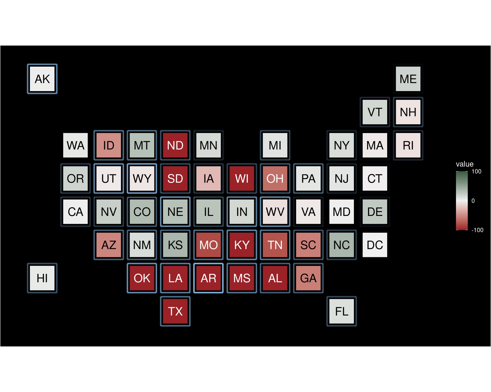
We add a new title and complete the caption with information about the new data.
q <- q + labs(
title = "Relation between the drop in abortion after Dobbs and the public opinion",
caption = paste0("Percent change in abortions is calculated from #WeCount's unrounded data.",
"\nData on opinion about overturning Roe v. Wade extracted from the ",
"PRRI American Values Atlas.")
) +
theme(plot.title = element_text(size = 15, color = "white", face = "bold",
family = "Helvetica", hjust = 0.1, vjust = 0)) +
theme(plot.subtitle = element_text(size = 14, color = "white", face = NULL,
family = "Helvetica", hjust = 0.8, vjust = 0)) +
theme(plot.caption = element_text(size = 10, color = "white", face = NULL,
family = "Helvetica", hjust = 0, vjust = 2))
q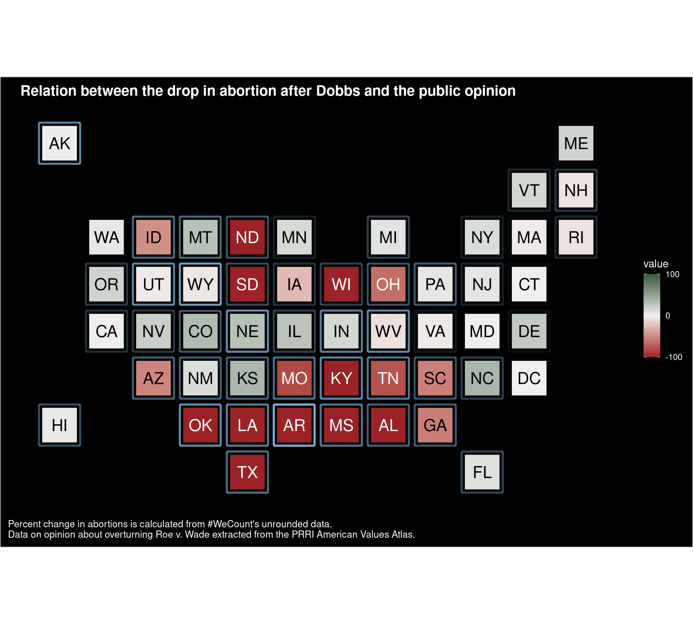
We add the line and text annotations with information about the states and the public opinion of each state
# ANNOTATION 1: ND AND MN
# ND
q <- q + annotate("segment", x = 6.5, xend = 6.5, y = 8.07, yend = 9,
color = "white")
q <- q + annotate(geom = "richtext", x = 3.8, y = 9.7,
label = "The only abortion clinic in
<span style = 'color:#9B2226'>**North Dakota**</span>
<br> moved to <span style = 'color:#D5DAD5'>**Minnesota**</span>,
where the number<br>of abortions rose by
<span style = 'color:#D5DAD5'>**14%**",
size = 5, fill = NA, label.color = NA, hjust = 0,
color = "white")
# ANNOTATION 2: CA AND AZ
# TX
q <- q + annotate("segment", x = 3.6, xend = 5.6, y = 1, yend = 1,
color = "white")
# OK Vrt
q <- q + annotate("segment", x = 3.6, xend = 3.6, y = 2.3, yend = 0.2,
color = "white")
# OK Hzt
q <- q + annotate("segment", x = 3.6, xend = 4.3, y = 2.3, yend = 2.3,
color = "white")
# TX&OK
q <- q + annotate(geom = "richtext", x = 1.5, y = -0.6,
label = "The states in which abortion
<br> dropped to <span style = 'color:#9B2226'>**0**</span> also showed
<br> the strongest support to <br> overturning
<span style = 'color:#7DB4DE'>**Roe v. Wade**",
size = 5, fill = NA, label.color = NA, hjust = 0,
color = "white")
# ANNOTATION 3: AR
# AR
# AR1
q <- q + annotate("segment", x = 7.5, xend = 7.5,
y = 1.65, yend = -0.5)
# AR2
q <- q + annotate("segment", x = 7.5, xend = 7.9,
y = -0.5, yend = -0.5)
# AR
q <- q + annotate(geom = "richtext", x = 8, y = -0.7,
label = "<span style = 'color:#9B2226'>**Arkansas**</span>
is the state in which<br>more people are in favor of
<br>overturning Roe v. Wade:<span style = 'color:#7DB4DE'> **48%**",
size = 5, fill = NA, label.color = NA, hjust = 0,
color = "white")
q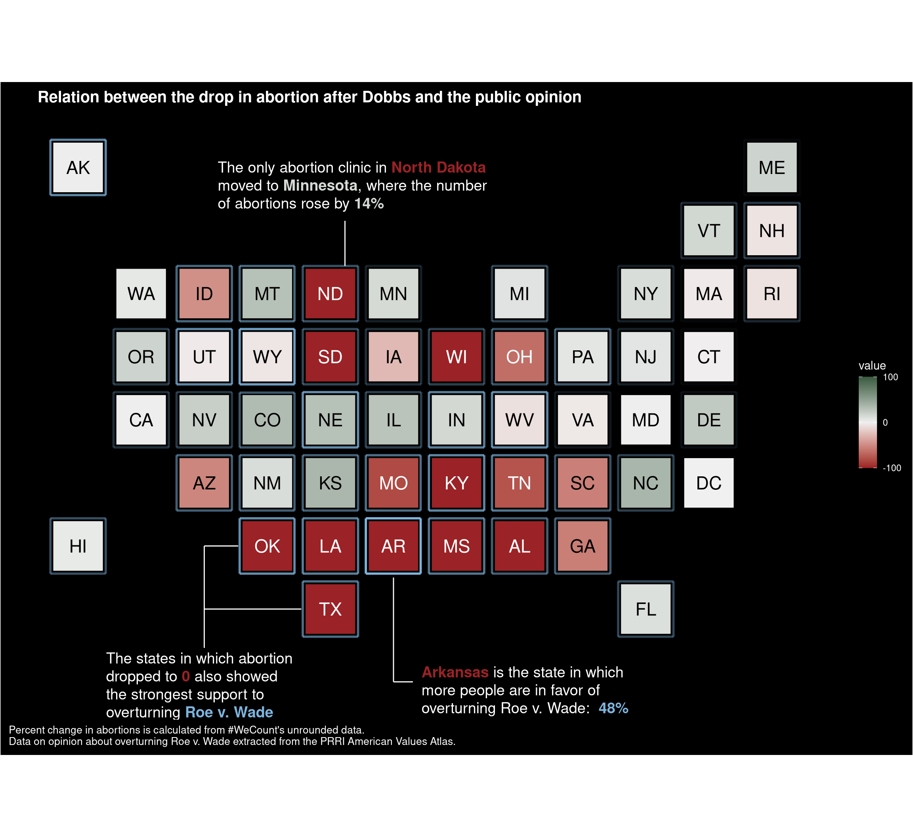
We start withe the first legend, which represent the colors for the filling of the states.
q <- q + guides(fill = guide_colorbar(#title = "PERCENT CHANGE",
#title.position = "top",
#title.theme = element_text(size = 10,
#family = "Helvetica"),
#title.hjust = 0.5,
#title.vjust = 0.5,
label = FALSE,
barheight = 0.7,
barwidth = 11,
#nbin = 100,
ticks = FALSE,
direction = "horizontal", )) +
theme(legend.position = c(0.28, 0.915),
legend.title = element_blank()) + ylim(-1.3, 12) +
annotate(geom = "richtext", x = 2.8, y = 12,
label = "Percent change in abortions <br> from April to August of 2022",
size = 4, fill = NA, label.color = NA, hjust = 0,
family = "Helvetica", color = "white") +
annotate(geom = "richtext", x = 2.8, y = 11.1,
label = "-100%",
size = 3, fill = NA, label.color = NA, hjust = 0,
family = "Helvetica", color = "white") +
annotate(geom = "richtext", x = 3.9, y = 11.1,
label = "No change",
size = 3, fill = NA, label.color = NA, hjust = 0,
family = "Helvetica", color = "white") +
annotate(geom = "richtext", x = 5.4, y = 11.1,
label = "+100%",
size = 3, fill = NA, label.color = NA, hjust = 0,
family = "Helvetica", color = "white")
q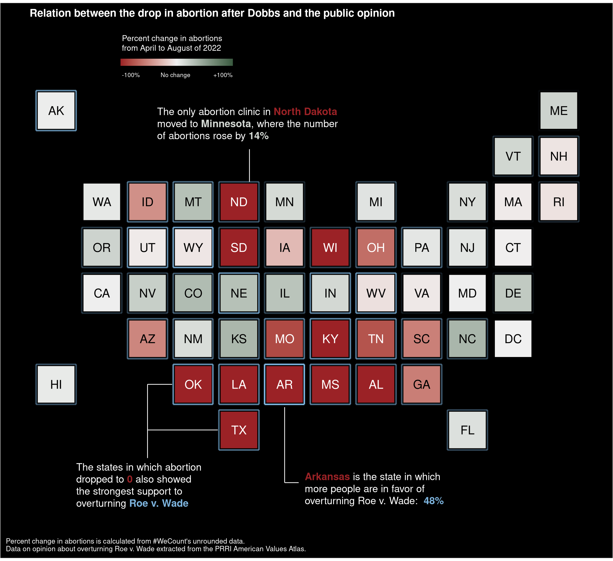
The second legend explains the squares that sorround the states.
q <- q +
annotate(geom = "richtext", x = 9.5, y = 12,
label = "Percent of population who
<br>would like Roe v. Wade overturned",
size = 4, fill = NA, label.color = NA, hjust = 0,
family = "Helvetica", color = "white") +
annotate("rect", xmin = 9.55, xmax = 9.85, ymin = 11.3,
ymax = 11.6, alpha = 0, fill = "#7DB4DE") +
annotate("rect", xmin = 9.86, xmax = 10.16, ymin = 11.3,
ymax = 11.6, alpha = 0.1, fill = "#7DB4DE") +
annotate("rect", xmin = 10.17, xmax = 10.47, ymin = 11.3,
ymax = 11.6, alpha = 0.2, fill = "#7DB4DE") +
annotate("rect", xmin = 10.48, xmax = 10.78, ymin = 11.3,
ymax = 11.6, alpha = 0.3, fill = "#7DB4DE") +
annotate("rect", xmin = 10.79, xmax = 11.09, ymin = 11.3,
ymax = 11.6, alpha = 0.4, fill = "#7DB4DE") +
annotate("rect", xmin = 11.10, xmax = 11.40, ymin = 11.3,
ymax = 11.6, alpha = 0.5, fill = "#7DB4DE") +
annotate("rect", xmin = 11.41, xmax = 11.71, ymin = 11.3,
ymax = 11.6, alpha = 0.6, fill = "#7DB4DE") +
annotate("rect", xmin = 11.72, xmax = 12.02, ymin = 11.3,
ymax = 11.6, alpha = 0.7, fill = "#7DB4DE") +
annotate("rect", xmin = 12.03, xmax = 12.33, ymin = 11.3,
ymax = 11.6, alpha = 0.8, fill = "#7DB4DE") +
annotate("rect", xmin = 12.34, xmax = 12.64, ymin = 11.3,
ymax = 11.6, alpha = 0.9, fill = "#7DB4DE") +
annotate("rect", xmin = 12.65, xmax = 12.95, ymin = 11.3,
ymax = 11.6, alpha = 1, fill = "#7DB4DE") +
annotate(geom = "richtext", x = 9.5, y = 11.1,
label = "25%",
size = 3, fill = NA, label.color = NA,
hjust = 0, family = "Helvetica", color = "white") +
annotate(geom = "richtext", x = 11.07, y = 11.1,
label = "36%",
size = 3, fill = NA, label.color = NA,
hjust = 0, family = "Helvetica", color = "white") +
annotate(geom = "richtext", x = 12.64, y = 11.1,
label = "48%",
size = 3, fill = NA, label.color = NA,
hjust = 0, family = "Helvetica", color = "white")
q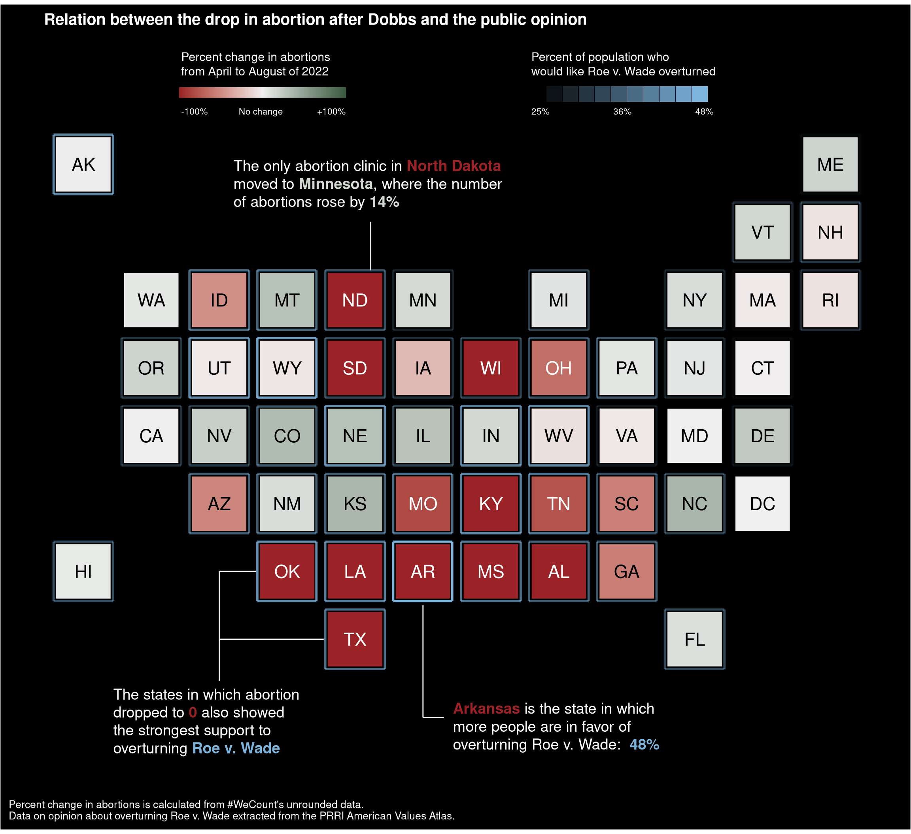